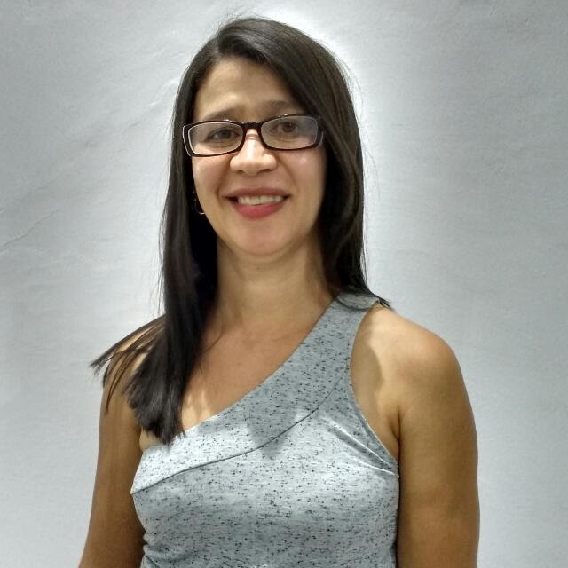

Portfólio
Insert title here
Maria Celian Feitosa De Medeiros

Sobre mim:
"Sou Maria Celian ,tenho 42 anos,casada,mãe de duas filhas e avó de um netinho.Atualmente sou estudante do Curso Técnico de Informática (Modalidade Subsequente)Turma 2017.2-IFPB- Campus Santa Luzia ,como também atendo a domicílio com cuidados de enfermagem."
Nível de Escolaridade:
-
Ensino Fundamental 1: Escola Normal Santa Luzia(1984 à 1987);
-
Ensino Fundamental 2 e Médio: Escola Estadual Padre Jerônimo Lauwen (1988 à 1994);
-
Auxiliar: de Enfermagem - CEFOR-RH(1997 à 1998);
-
Técnico: de Enfermagem - Escola Técnica de Enfermagem DRA.Mirian Nóbrega ( 2003);
-
Técnico: de Informática - IFPB (Cursando - Turma 2017.2);
Trabalhos Realizados:
-
Técnico de Enfermagem: Hospital e Maternidade Sinhá Carneiro-De 2011 até 2017;
-
Atendimento: Domiciliar;
Cursos Adicionais:
-
Saúde:
-
Higiene e Segurança no trabalho: Dias 07 e 08/11 de 2015(20hs);
-
Avaliação e Tratamento de Feridas: Dia 07 e 08/11 de 2015(08hs);
-
Curso Sala de Vacina : De 03 a 31/08 de 2013(40hs);
-
Congresso Onlaine Nacional de Enfermagem: De 08 a 13/03 de 2015(20hs);
-
Atendimento Pré-Hospitalar-APH: Agosto e Setembro de 2014(120hs);
Voltar para o topo...